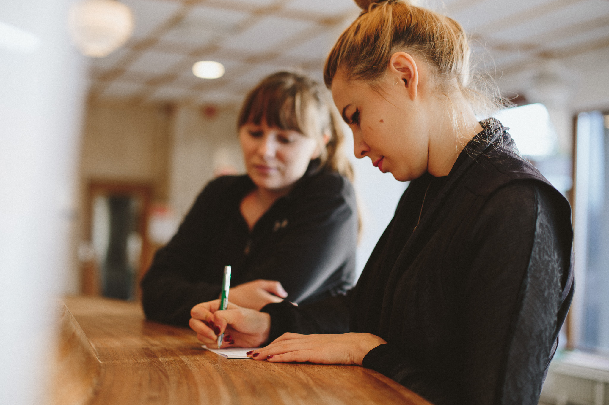

Product / UX / UI
Distriktstandvården is a Stockholm-based dental company. Me and my team at Hyper Island were asked to improve the digital experience in order to increase Distriktstandvården patient base.

Distriktstandvården came to us at Hyper Island for a digital solution that would attract new patients. Our process began with research.

After desktop research and in-depth user interviews, we were able to summarize 3 core insights to support the following work.
There are two key moments when potential patients are more attainable.

We started by listing all of our associations with the experience of visiting the dentist. These associations were grounded in our research, user testing, and observation.

After some initial experimentation, I led a very structured but fast-paced model for prototyping. For 20 minutes, we worked independently on different sections of the user flow. We’d then reconvene and spend 5 minutes per person to present our latest draft to the rest of the team and receive feedback. After 4 sprint and feedback cycles, we brought the different pieces of the prototype together in digital form.